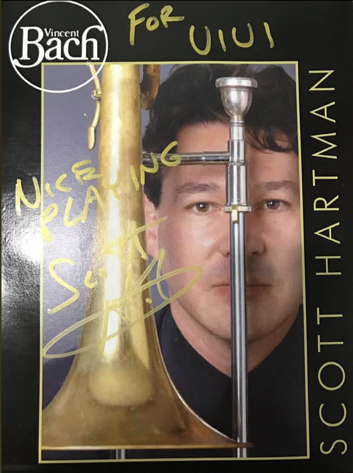

Hobbies
Trombone Playing
I started playing the trombone in the Jian-an elementary school wind band when I was ten. During those days, I was instructed by Mr. Terry Shiu(Associate Principal Trombone of National Symphony Orchestra of Taiwan) and Mr. Chih-Wei Tung. I continued to learn playing solo under the guidance of Mr. Shiu when I started junior high school.
Honors
- National Student Competition of Music Second Place, 2011
Master Classes
- Scott Hartman(Yale School of Music), 2011
- Ko-Ichiro Yamamoto(Principal trombonist of Seattle Symphony), 2010
Bands
- National Taiwan University Wind Orchestra, 2017-2019
- Taipei Wind Orchestra & Symphonic Band (Subsection for kids), 2008
- Jian-an Elementary School Wind Orchestra, 2006-2008

Photography
I started photography when I got into image processing. I enjoy shooting and researching specs of cameras.